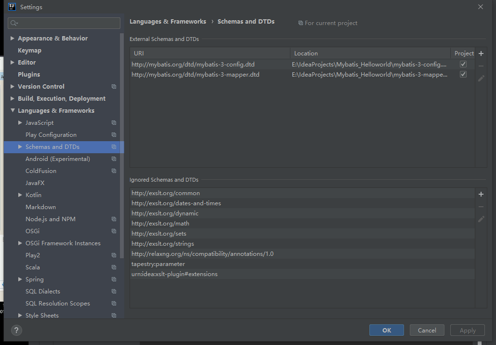

12.25 Mybatis Hello World
第一步： 创建一个普通project
第二部：创建一个bean，对应数据表
第三步：导包
- mybatis-3.4.1.jar
- log4j-1.2.17.jar
- mysql-connector-java-5.1.37-bin.jar
第四步：配置全局文件.xml，放在classpath下（就src下），告诉Mybatis连接哪个全局数据库
1
2
3
4
5
6
7
8
9
10
11
12
13
14
15
16
17
18
19
20
21
22
| <?xml version="1.0" encoding="UTF-8" ?>
<!DOCTYPE configuration
PUBLIC "-//mybatis.org//DTD Config 3.0//EN"
"http://mybatis.org/dtd/mybatis-3-config.dtd">
<configuration>
<environments default="development">
<environment id="development">
<transactionManager type="JDBC"/>
<dataSource type="POOLED">
<property name="driver" value="com.mysql.jdbc.Driver"/>
<property name="url" value="jdbc:mysql://localhost:3306/db_practice?useUnicode=true&characterEncoding=UTF-8"/>
<property name="username" value="root"/>
<property name="password" value="0000"/>
</dataSource>
</environment>
</environments>
<mappers>
<mapper resource="org/mybatis/example/BlogMapper.xml"/>
</mappers>
</configuration>
|
第五步：写第二个.xml配置文件，告诉Mybatis如何执行SQL
1
2
3
4
5
6
7
8
9
10
11
| <?xml version="1.0" encoding="UTF-8" ?>
<!DOCTYPE mapper
PUBLIC "-//mybatis.org//DTD Mapper 3.0//EN"
"http://mybatis.org/dtd/mybatis-3-mapper.dtd">
<mapper namespace="com.runsstudio.dao.EmployeeDao">
<select id="getEmpById" resultType="com.runsstudio.bean.Employee">
select * from emp where id=#{id}
</select>
</mapper>
|
第六步：在全局xml配置中注册第二个xml
1
2
3
4
5
| <mappers>
<mapper resource="com/runsstudio/dao/EmployeeDao.xml"/>
</mappers>
|
第7步： 配置查询
1
2
3
4
5
6
7
8
9
10
11
12
13
14
15
| @Test
public void test01() throws IOException {
String resource="com/runsstudio/conf/MybatisConf.xml";
InputStream inputStream= Resources.getResourceAsStream(resource);
SqlSessionFactory sqlSessionFactory = new SqlSessionFactoryBuilder().build(inputStream);
SqlSession session = sqlSessionFactory.openSession();
EmployeeDao employeeDao=session.getMapper(EmployeeDao.class);
Employee employee=employeeDao.getEmpById(1001);
System.out.println(employee);
}
|
查询结果
1
| Employee{id=1001, ename='孙悟空', job_id=4, mgr=1004, joindate=Sun Dec 17 00:00:00 CST 2000, salary=8000.0, bonus=null, dept_id=20}
|
导入dtd，写xml有提示：
